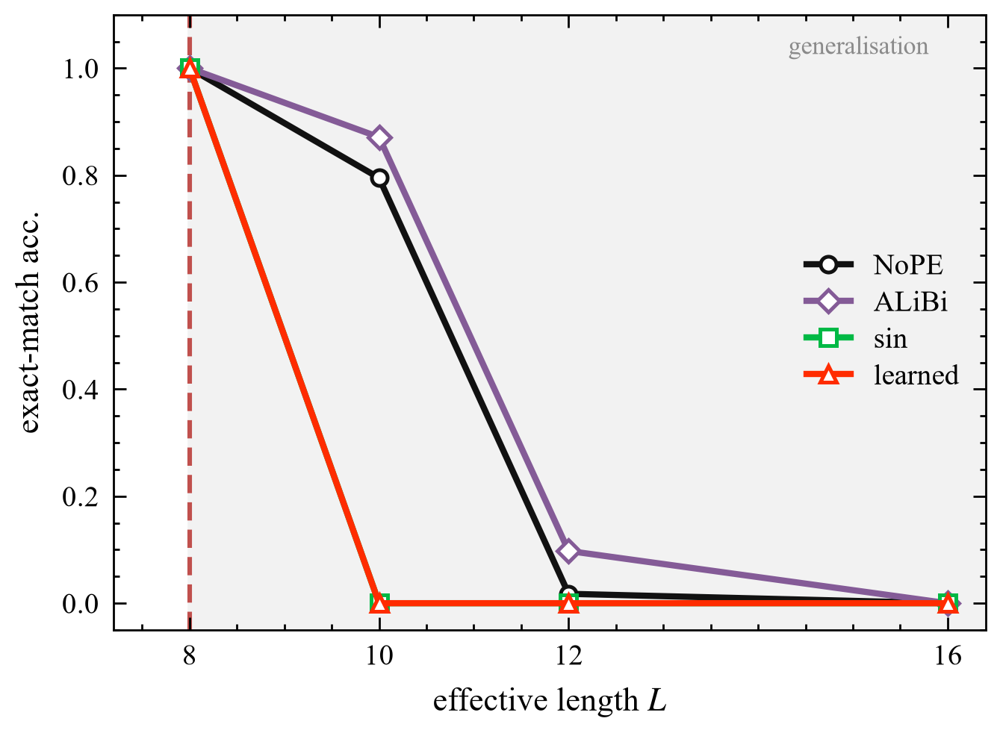
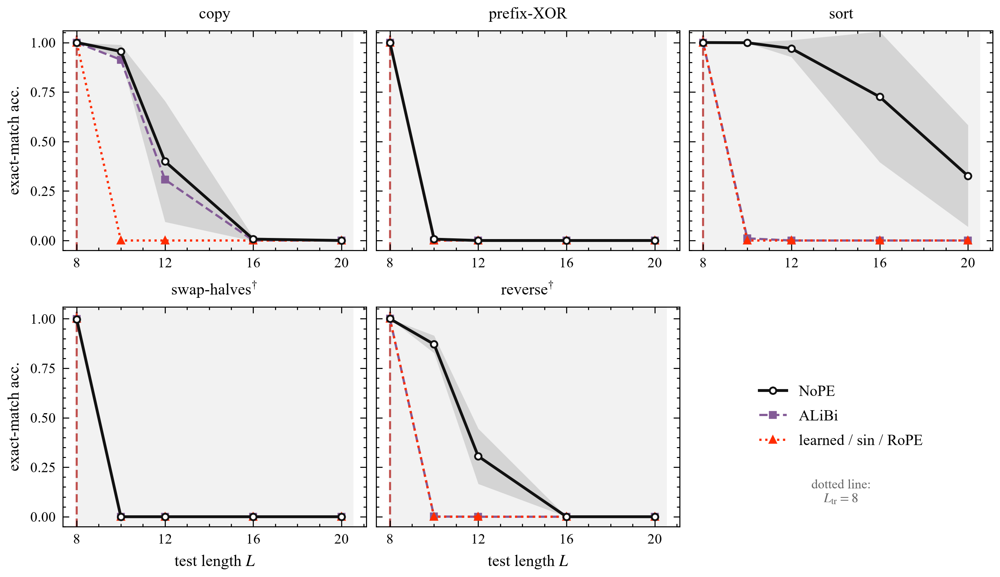

Anonymous submission · 2026
Explicit positional encodings are widely held to spoil length generalisation because they place the model at absolute positions it never saw in training. We argue that this diagnosis is wrong, and offer a simpler one: an explicit code lets the model adopt a length-indexed lookup that is exact at the training length and undefined everywhere else.
The two accounts are not separable in the usual protocol: a sequence of L tokens occupies 2L+1 positions, so “position beyond the trained range” and “length beyond the trained length” become true at the same moment. We separate them by fixing the total token count at 41 and padding every example, so all 41 positions occur during training and only the effective length varies.

Extrapolation score (mean exact-match accuracy over L ∈ {10,12,16,20}), two seeds per cell. Every cell first reaches 0.998 in-distribution accuracy, so these are extrapolation failures, not fitting failures.
| Task | NoPE | learned | sin | RoPE | ALiBi |
|---|---|---|---|---|---|
| copy | 0.34 | 0.00 | 0.00 | 0.00 | 0.31 |
| prefix-XOR | 0.00 | 0.00 | 0.00 | 0.00 | 0.00 |
| sort | 0.76 | 0.00 | 0.00 | 0.00 | 0.00 |
| swap-halves† | 0.00 | 0.00 | 0.00 | 0.00 | 0.00 |
| reverse† | 0.29 | 0.00 | 0.00 | 0.00 | 0.00 |
† length-coupled task. ALiBi is the only explicit scheme that departs from zero, and it is the only one that adds position to attention logits rather than to the token representation.

git clone https://github.com/lvdousha26/positional-lookup
cd positional-lookup
# Docker (recommended, CPU is enough for the padded probe)
docker build -t poslookup .
docker run --rm poslookup python code/padded.py --task copy --pe sin --steps 2000# or natively
pip install -r requirements.txt
python code/padded.py --task copy --pe nope --steps 2000
python code/padded.py --task copy --pe sin --steps 2000
python code/padded.py --task copy --pe alibi --steps 2000
python code/plot_figs.py && cd paper && latexmk -pdf main.texThe definitions of positional rule, length-coupling and position-free are formalised in Lean 4, together with machine-checked proofs that the five tasks in the paper fall where the paper says they do. The empirical claims (the cliff, its location) are not formalised — they are measurements, not theorems.
@article{positional_lookup_2026,
title = {Explicit Positional Encodings Turn Length Generalisation into Lookup},
author = {Anonymous},
year = {2026},
note = {Code: https://github.com/lvdousha26/positional-lookup}
}